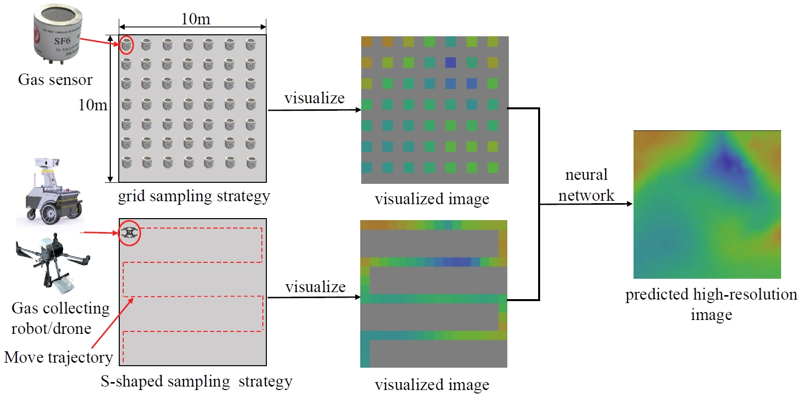
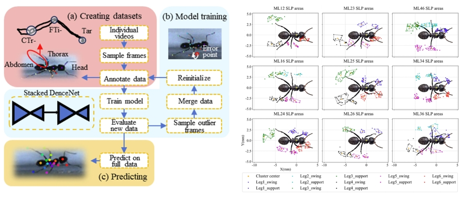
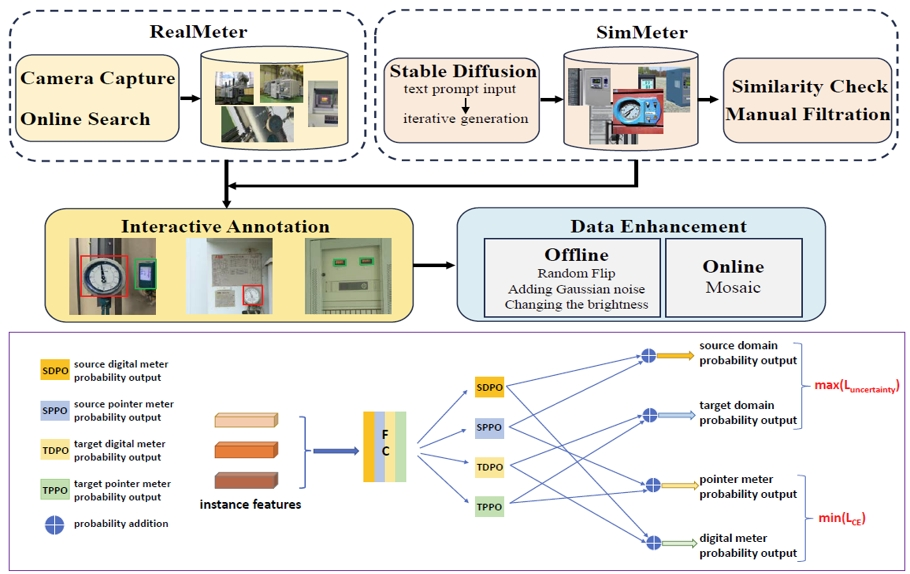

{kind=link}
{kind=link}
{kind=link}
{kind=link}
{kind=link}

About
I am a first year PhD student in New York University. I received my B.E. and master degree in automation from Tianjin University.
I am a member of Biomechatronics and Intelligent Robotics Lab (BIROLAB) directly by Prof. Hao Su.
My research mainly fouces on Musculoskeletal Modeling, Exoskeleton Development and Control, and Reinforcement Learning.
Let's do something cool and meaningful!
[CV_English]
[CV_Chinese]
Publications
2024 IEEE Transactions on Instrumentation and Measurement
"AWED: Asymmetric Wavelet Encoder-Decoder Framework for Simultaneous Gas Distribution Mapping and Gas Source Localization"
Highlight: A high-precision reconstruction of the airflow field distribution map has been achieved under ultra-low density sampling (0.1%), significantly reducing the number of sensors required for gas monitoring.
[paper]
[github]

2024 Journal of Bionic Engineering
"Gait Characteristics and Adaptation Strategies of Ants with Missing Legs"
Highlight: A keypoint detection model was trained to detection keypoints for nine different kinds of leg missing situation and we found some interesting results such as the gait phase rhythm and the range of leg swing angle.
[paper]

2023 IEEE Transactions on Instrumentation and Measurement
"Few-shot Industrial Meter Detection Based on
Sim-to-Real Domain Adaptation and Category
Augmentation"
Highlight: A generative dataset for power meter detection in complex scenes has been constructed, and
a domain adaptation model has been proposed to reduce the dependence on real datasets.
[paper]
[github]
Projects
Power Inspection Robot Based on Intelligent State Perception(Project Leader)
Highlight: A perception-manipulation integrated robot for dangerous power scenarios has been
developed, replacing human labor to complete environmental detection and emergency manipulation
tasks. The robot has been put into use in a substation in Tianjin, China.
Gait analysis of injured ants and its application in motion control of multi-legged robots
Highlight: Inspired by the injured gait of ants, we have implemented gait adjustment strategies for
hexapod robots. The robot can walk a straight line successfully under various conditions of broken legs.
Photography
I'm also interested in landscape photography!

Garze, Sichuan, China

Guangzhou, Guangdong, China